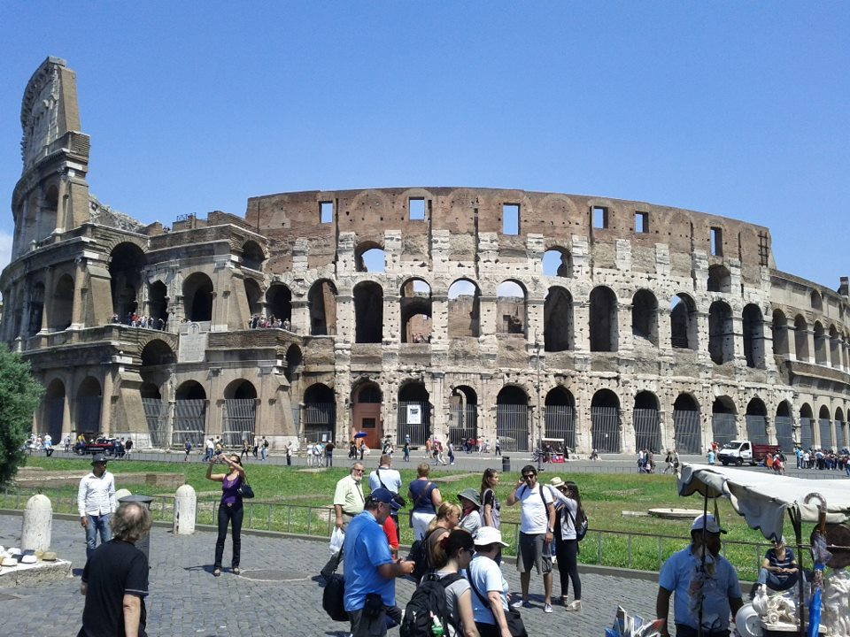
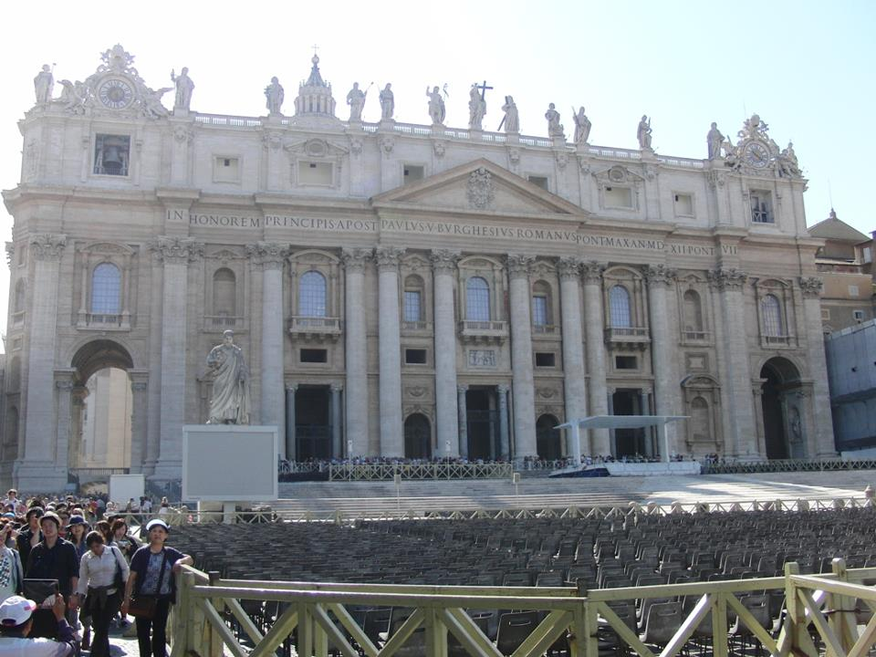

|  |
Coliseum:
The Roman Colosseum or Coliseum, originally known as the Flavian Amphitheatre,
was commisioned in AD 72 by Emperor Vespasian. It was completed by his son,
Titus, in 80, with later improvements by Domitian. The Colosseum is located just
east of the Roman Forum and was built to a practical design, with its 80 arched
entrances allowing easy access to 55,000 spectators, who were seated according
to rank. The Coliseum is huge, an ellipse 188m long and 156 wide.
Originally 240 masts were attached to stone corbels on the 4th level.
|
|  |
Vatican:
Vatican city (Citta del Vaticano), the papal residence, was built over the
tomb of Saint Peter. The Vatican's position as a sovereign state within a state
was quaranteed by the Lateran Treaty of 1929, marked by the building of a new road,
the Via della Conciliazione. This leads from huge St Peter's basilica to
Castel Sant' Angelo, a monument to a far grimmer past. Vatican is the smallest
state in the world, based in Rome in Italy.
|